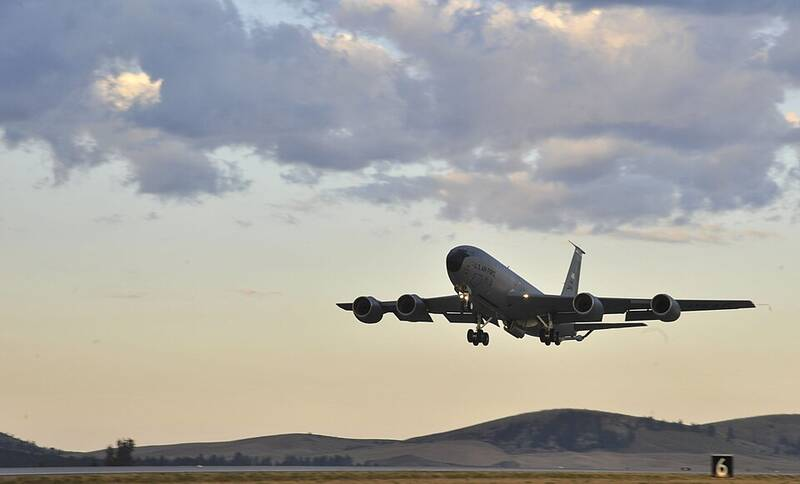

Fairchild AFB Washington Washington · Military base · 47.616°N, 117.656°W A KC-135 Stratotanker taking off from Fairchild, 2014. Photo: Senior Airman Mary O'Dell, U.S. Air Force, Public domain (source) Air Force aerial refueling base. 1 Open in the interactive Watcher Sources Fairchild Air Force Base Wikipedia